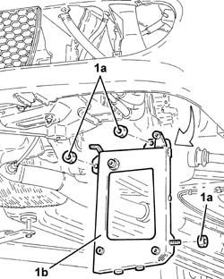

2130A25 Automatic transmission fluid cooling radiator SUPPORT - R.R. with oil radiator removed
- Path
- Procedures > 21 GEARBOX > 2130 AUTOMATIC TRANSMISSION AND DIFFERENTIAL > 2130A automatic transmission assembly > 2130A25 Automatic transmission fluid cooling radiator SUPPORT - R.R. with oil radiator removed
- Kind
- repair procedure (removal / refitting; the operation number is the code)
- Applies to
- engines: 2.5 V6; all production periods
- Interactive page
- https://sloeber94.github.io/elrnDB-a156/en/#/3237988
Applies to: engines: 2.5 V6; all production periods; only with equipment: Q-System
 Removing
Removing
 Refitting
Refitting1. Undo the nuts (1a) and remove automatic transmission fluid radiator mounting (1b).

Applies to: engines: 2.5 V6; all production periods; only with equipment: Q-System
Refitting
RemovingPlace the automatic transmission fluid radiator mounting back in its housing and secure with the nuts.